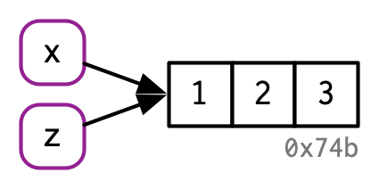

2 Names and values
2.1 Introduction
In R, it is important to understand the distinction between an object and its name. Doing so will help you:
- More accurately predict the performance and memory usage of your code.
- Write faster code by avoiding accidental copies, a major source of slow code.
- Better understand Rs functional programming tools.
The goal of this chapter is to help you understand the distinction between names and values, and when R will copy an object.
Quiz
Answer the following questions to see if you can safely skip this chapter. You can find the answers at the end of the chapter in Section 2.7.
Given the following data frame, how do I create a new column called 3 that contains the sum of
1and2? You may only use$, not[[. What makes1,2, and3challenging as variable names?df <- data.frame(runif(3), runif(3)) names(df) <- c(1, 2)In the following code, how much memory does
yoccupy?x <- runif(1e6) y <- list(x, x, x)On which line does
aget copied in the following example?a <- c(1, 5, 3, 2) b <- a b[[1]] <- 10
Outline
Section 2.2 introduces you to the distinction between names and values, and discusses how
<-creates a binding, or reference, between a name and a value.Section 2.3 describes when R makes a copy: whenever you modify a vector, youre almost certainly creating a new, modified vector. Youll learn how to use
tracemem()to figure out when a copy actually occurs. Then youll explore the implications as they apply to function calls, lists, data frames, and character vectors.Section 2.4 explores the implications of the previous two sections on how much memory an object occupies. Since your intuition may be profoundly wrong and since
utils::object.size()is unfortunately inaccurate, youll learn how to uselobstr::obj_size().Section 2.5 describes the two important exceptions to copy-on-modify: with environments and values with a single name, objects are actually modified in place.
Section 2.6 concludes the chapter with a discussion of the garbage collector, which frees up the memory used by objects no longer referenced by a name.
Prerequisites
Well use the lobstr package to dig into the internal representation of R objects.
library(lobstr)Sources
The details of Rs memory management are not documented in a single place. Much of the information in this chapter was gleaned from a close reading of the documentation (particularly ?Memory and ?gc), the memory profiling section of Writing R extensions,8 and the SEXPs section of R internals.9 The rest I figured out by reading the C source code, performing small experiments, and asking questions on R-devel. Any mistakes are entirely mine.
2.2 Binding basics
Consider this code:
x <- c(1, 2, 3)Its easy to read it as: create an object named x, containing the values 1, 2, and 3. Unfortunately, thats a simplification that will lead to inaccurate predictions about what R is actually doing behind the scenes. Its more accurate to say that this code is doing two things:
- Its creating an object, a vector of values,
c(1, 2, 3). - And its binding that object to a name,
x.
In other words, the object, or value, doesnt have a name; its actually the name that has a value.
To further clarify this distinction, Ill draw diagrams like this:

The name, x, is drawn with a rounded rectangle. It has an arrow that points to (or binds or references) the value, the vector c(1, 2, 3). The arrow points in opposite direction to the assignment arrow: <- creates a binding from the name on the left-hand side to the object on the right-hand side.
Thus, you can think of a name as a reference to a value. For example, if you run this code, you dont get another copy of the value c(1, 2, 3), you get another binding to the existing object:
y <- x
You might have noticed that the value c(1, 2, 3) has a label: 0x74b. While the vector doesnt have a name, Ill occasionally need to refer to an object independent of its bindings. To make that possible, Ill label values with a unique identifier. These identifiers have a special form that looks like the objects memory address, i.e.the location in memory where the object is stored. But because the actual memory addresses changes every time the code is run, we use these identifiers instead.
You can access an objects identifier with lobstr::obj_addr(). Doing so allows you to see that both x and y point to the same identifier:
obj_addr(x)
#> [1] "0x559e9ecb71a8"
obj_addr(y)
#> [1] "0x559e9ecb71a8"These identifiers are long, and change every time you restart R.
It can take some time to get your head around the distinction between names and values, but understanding this is really helpful in functional programming where functions can have different names in different contexts.
2.2.1 Non-syntactic names
R has strict rules about what constitutes a valid name. A syntactic name must consist of letters10, digits, . and _ but cant begin with _ or a digit. Additionally, you cant use any of the reserved words like TRUE, NULL, if, and function (see the complete list in ?Reserved). A name that doesnt follow these rules is a non-syntactic name; if you try to use them, youll get an error:
_abc <- 1
#> Error: unexpected input in "_"
if <- 10
#> Error: unexpected assignment in "if <-"Its possible to override these rules and use any name, i.e., any sequence of characters, by surrounding it with backticks:
`_abc` <- 1
`_abc`
#> [1] 1
`if` <- 10
`if`
#> [1] 10While its unlikely youd deliberately create such crazy names, you need to understand how these crazy names work because youll come across them, most commonly when you load data that has been created outside of R.
2.2.2 Exercises
Explain the relationship between
a,b,canddin the following code:a <- 1:10 b <- a c <- b d <- 1:10The following code accesses the mean function in multiple ways. Do they all point to the same underlying function object? Verify this with
lobstr::obj_addr().mean base::mean get("mean") evalq(mean) match.fun("mean")By default, base R data import functions, like
read.csv(), will automatically convert non-syntactic names to syntactic ones. Why might this be problematic? What option allows you to suppress this behaviour?What rules does
make.names()use to convert non-syntactic names into syntactic ones?I slightly simplified the rules that govern syntactic names. Why is
.123e1not a syntactic name? Read?make.namesfor the full details.
2.3 Copy-on-modify
Consider the following code. It binds x and y to the same underlying value, then modifies y11.
x <- c(1, 2, 3)
y <- x
y[[3]] <- 4
x
#> [1] 1 2 3Modifying y clearly didnt modify x. So what happened to the shared binding? While the value associated with y changed, the original object did not. Instead, R created a new object, 0xcd2, a copy of 0x74b with one value changed, then rebound y to that object.

This behaviour is called copy-on-modify. Understanding it will radically improve your intuition about the performance of R code. A related way to describe this behaviour is to say that R objects are unchangeable, or immutable. However, Ill generally avoid that term because there are a couple of important exceptions to copy-on-modify that youll learn about in Section 2.5.
When exploring copy-on-modify behaviour interactively, be aware that youll get different results inside of RStudio. Thats because the environment pane must make a reference to each object in order to display information about it. This distorts your interactive exploration but doesnt affect code inside of functions, and so doesnt affect performance during data analysis. For experimentation, I recommend either running R directly from the terminal, or using RMarkdown (like this book).
2.3.1 tracemem()
You can see when an object gets copied with the help of base::tracemem(). Once you call that function with an object, youll get the objects current address:
x <- c(1, 2, 3)
cat(tracemem(x), "\n")
#> <0x7f80c0e0ffc8> From then on, whenever that object is copied, tracemem() will print a message telling you which object was copied, its new address, and the sequence of calls that led to the copy:
y <- x
y[[3]] <- 4L
#> tracemem[0x7f80c0e0ffc8 -> 0x7f80c4427f40]: If you modify y again, it wont get copied. Thats because the new object now only has a single name bound to it, so R applies modify-in-place optimisation. Well come back to this in Section 2.5.
y[[3]] <- 5L
untracemem(x)untracemem() is the opposite of tracemem(); it turns tracing off.
2.3.2 Function calls
The same rules for copying also apply to function calls. Take this code:
f <- function(a) {
a
}
x <- c(1, 2, 3)
cat(tracemem(x), "\n")
#> <0x559ea06c1eb8>
z <- f(x)
# there's no copy here!
untracemem(x)While f() is running, the a inside the function points to the same value as the x does outside the function:

Youll learn more about the conventions used in this diagram in Section 7.4.4. In brief: the function f() is depicted by the yellow object on the right. It has a formal argument, a, which becomes a binding (indicated by dotted black line) in the execution environment (the gray box) when the function is run.
Once f() completes, x and z will point to the same object. 0x74b never gets copied because it never gets modified. If f() did modify x, R would create a new copy, and then z would bind that object.

2.3.3 Lists
Its not just names (i.e.variables) that point to values; elements of lists do too. Consider this list, which is superficially very similar to the numeric vector above:
l1 <- list(1, 2, 3)This list is more complex because instead of storing the values itself, it stores references to them:

This is particularly important when we modify a list:
l2 <- l1
l2[[3]] <- 4
Like vectors, lists use copy-on-modify behaviour; the original list is left unchanged, and R creates a modified copy. This, however, is a shallow copy: the list object and its bindings are copied, but the values pointed to by the bindings are not. The opposite of a shallow copy is a deep copy where the contents of every reference are copied. Prior to R 3.1.0, copies were always deep copies.
To see values that are shared across lists, use lobstr::ref(). ref() prints the memory address of each object, along with a local ID so that you can easily cross-reference shared components.
ref(l1, l2)
#> [1:0x559e9f81df58] <list>
#> [2:0x559e9e5ad4d8] <dbl>
#> [3:0x559e9e5ad4a0] <dbl>
#> [4:0x559e9e5ad468] <dbl>
#>
#> [5:0x559e9fc30ed8] <list>
#> [2:0x559e9e5ad4d8]
#> [3:0x559e9e5ad4a0]
#> [6:0x559e9f116530] <dbl>2.3.4 Data frames
Data frames are lists of vectors, so copy-on-modify has important consequences when you modify a data frame. Take this data frame as an example:
d1 <- data.frame(x = c(1, 5, 6), y = c(2, 4, 3))
If you modify a column, only that column needs to be modified; the others will still point to their original references:
d2 <- d1
d2[, 2] <- d2[, 2] * 2
However, if you modify a row, every column is modified, which means every column must be copied:
d3 <- d1
d3[1, ] <- d3[1, ] * 3
2.3.5 Character vectors
The final place that R uses references is with character vectors12. I usually draw character vectors like this:
x <- c("a", "a", "abc", "d")
But this is a polite fiction. R actually uses a global string pool where each element of a character vector is a pointer to a unique string in the pool:

You can request that ref() show these references by setting the character argument to TRUE:
ref(x, character = TRUE)
#> [1:0x559e9f8f9dd8] <chr>
#> [2:0x559e9a541358] <string: "a">
#> [2:0x559e9a541358]
#> [3:0x559e9e34bf80] <string: "abc">
#> [4:0x559e9a6f6c78] <string: "d">This has a profound impact on the amount of memory a character vector uses but is otherwise generally unimportant, so elsewhere in the book Ill draw character vectors as if the strings lived inside a vector.
2.3.6 Exercises
Why is
tracemem(1:10)not useful?Explain why
tracemem()shows two copies when you run this code. Hint: carefully look at the difference between this code and the code shown earlier in the section.x <- c(1L, 2L, 3L) tracemem(x) x[[3]] <- 4Sketch out the relationship between the following objects:
a <- 1:10 b <- list(a, a) c <- list(b, a, 1:10)What happens when you run this code?
x <- list(1:10) x[[2]] <- xDraw a picture.
2.4 Object size
You can find out how much memory an object takes with lobstr::obj_size()13:
obj_size(letters)
#> 1,712 B
obj_size(ggplot2::diamonds)
#> 3,456,344 BSince the elements of lists are references to values, the size of a list might be much smaller than you expect:
x <- runif(1e6)
obj_size(x)
#> 8,000,048 B
y <- list(x, x, x)
obj_size(y)
#> 8,000,128 By is only 80 bytes14 bigger than x. Thats the size of an empty list with three elements:
obj_size(list(NULL, NULL, NULL))
#> 80 BSimilarly, because R uses a global string pool character vectors take up less memory than you might expect: repeating a string 100 times does not make it take up 100 times as much memory.
banana <- "bananas bananas bananas"
obj_size(banana)
#> 136 B
obj_size(rep(banana, 100))
#> 928 BReferences also make it challenging to think about the size of individual objects. obj_size(x) + obj_size(y) will only equal obj_size(x, y) if there are no shared values. Here, the combined size of x and y is the same as the size of y:
obj_size(x, y)
#> 8,000,128 BFinally, R 3.5.0 and later versions have a feature that might lead to surprises: ALTREP, short for alternative representation. This allows R to represent certain types of vectors very compactly. The place you are most likely to see this is with : because instead of storing every single number in the sequence, R just stores the first and last number. This means that every sequence, no matter how large, is the same size:
obj_size(1:3)
#> 680 B
obj_size(1:1e3)
#> 680 B
obj_size(1:1e6)
#> 680 B
obj_size(1:1e9)
#> 680 B2.4.1 Exercises
In the following example, why are
object.size(y)andobj_size(y)so radically different? Consult the documentation ofobject.size().y <- rep(list(runif(1e4)), 100) object.size(y) #> 8005648 bytes obj_size(y) #> 80,896 BTake the following list. Why is its size somewhat misleading?
funs <- list(mean, sd, var) obj_size(funs) #> 17,608 BPredict the output of the following code:
a <- runif(1e6) obj_size(a) b <- list(a, a) obj_size(b) obj_size(a, b) b[[1]][[1]] <- 10 obj_size(b) obj_size(a, b) b[[2]][[1]] <- 10 obj_size(b) obj_size(a, b)
2.5 Modify-in-place
As weve seen above, modifying an R object usually creates a copy. There are two exceptions:
Objects with a single binding get a special performance optimisation.
Environments, a special type of object, are always modified in place.
2.5.1 Objects with a single binding
If an object has a single name bound to it, R will modify it in place:
v <- c(1, 2, 3)
v[[3]] <- 4
(Note the object IDs here: v continues to bind to the same object, 0x207.)
Two complications make predicting exactly when R applies this optimisation challenging:
When it comes to bindings, R can currently15 only count 0, 1, or many. That means that if an object has two bindings, and one goes away, the reference count does not go back to 1: one less than many is still many. In turn, this means that R will make copies when it sometimes doesnt need to.
Whenever you call the vast majority of functions, it makes a reference to the object. The only exception are specially written primitive C functions. These can only be written by R-core and occur mostly in the base package.
Together, these two complications make it hard to predict whether or not a copy will occur. Instead, its better to determine it empirically with tracemem().
Lets explore the subtleties with a case study using for loops. For loops have a reputation for being slow in R, but often that slowness is caused by every iteration of the loop creating a copy. Consider the following code. It subtracts the median from each column of a large data frame:
x <- data.frame(matrix(runif(5 * 1e4), ncol = 5))
medians <- vapply(x, median, numeric(1))
for (i in seq_along(medians)) {
x[[i]] <- x[[i]] - medians[[i]]
}This loop is surprisingly slow because each iteration of the loop copies the data frame. You can see this by using tracemem():
cat(tracemem(x), "\n")
#> <0x7f80c429e020>
for (i in 1:5) {
x[[i]] <- x[[i]] - medians[[i]]
}
#> tracemem[0x7f80c429e020 -> 0x7f80c0c144d8]:
#> tracemem[0x7f80c0c144d8 -> 0x7f80c0c14540]: [[<-.data.frame [[<-
#> tracemem[0x7f80c0c14540 -> 0x7f80c0c145a8]: [[<-.data.frame [[<-
#> tracemem[0x7f80c0c145a8 -> 0x7f80c0c14610]:
#> tracemem[0x7f80c0c14610 -> 0x7f80c0c14678]: [[<-.data.frame [[<-
#> tracemem[0x7f80c0c14678 -> 0x7f80c0c146e0]: [[<-.data.frame [[<-
#> tracemem[0x7f80c0c146e0 -> 0x7f80c0c14748]:
#> tracemem[0x7f80c0c14748 -> 0x7f80c0c147b0]: [[<-.data.frame [[<-
#> tracemem[0x7f80c0c147b0 -> 0x7f80c0c14818]: [[<-.data.frame [[<-
#> tracemem[0x7f80c0c14818 -> 0x7f80c0c14880]:
#> tracemem[0x7f80c0c14880 -> 0x7f80c0c148e8]: [[<-.data.frame [[<-
#> tracemem[0x7f80c0c148e8 -> 0x7f80c0c14950]: [[<-.data.frame [[<-
#> tracemem[0x7f80c0c14950 -> 0x7f80c0c149b8]:
#> tracemem[0x7f80c0c149b8 -> 0x7f80c0c14a20]: [[<-.data.frame [[<-
#> tracemem[0x7f80c0c14a20 -> 0x7f80c0c14a88]: [[<-.data.frame [[<-
untracemem(x)In fact, each iteration copies the data frame not once, not twice, but three times! Two copies are made by [[.data.frame, and a further copy16 is made because [[.data.frame is a regular function that increments the reference count of x.
We can reduce the number of copies by using a list instead of a data frame. Modifying a list uses internal C code, so the references are not incremented and only a single copy is made:
y <- as.list(x)
cat(tracemem(y), "\n")
#> <0x7f80c5c3de20>
for (i in 1:5) {
y[[i]] <- y[[i]] - medians[[i]]
}
#> tracemem[0x7f80c5c3de20 -> 0x7f80c48de210]: While its not hard to determine when a copy is made, it is hard to prevent it. If you find yourself resorting to exotic tricks to avoid copies, it may be time to rewrite your function in C++, as described in Chapter 25.
2.5.2 Environments
Youll learn more about environments in Chapter 7, but its important to mention them here because their behaviour is different from that of other objects: environments are always modified in place. This property is sometimes described as reference semantics because when you modify an environment all existing bindings to that environment continue to have the same reference.
Take this environment, which we bind to e1 and e2:
e1 <- rlang::env(a = 1, b = 2, c = 3)
e2 <- e1
If we change a binding, the environment is modified in place:
e1$c <- 4
e2$c
#> [1] 4
This basic idea can be used to create functions that remember their previous state. See Section 10.2.4 for more details. This property is also used to implement the R6 object-oriented programming system, the topic of Chapter 14.
One consequence of this is that environments can contain themselves:
e <- rlang::env()
e$self <- e
ref(e)
#> [1:0x559ea17a27c0] <env>
#> self = [1:0x559ea17a27c0]
This is a unique property of environments!
2.5.3 Exercises
Explain why the following code doesnt create a circular list.
x <- list() x[[1]] <- xWrap the two methods for subtracting medians into two functions, then use the bench package17 to carefully compare their speeds. How does performance change as the number of columns increase?
What happens if you attempt to use
tracemem()on an environment?
2.6 Unbinding and the garbage collector
Consider this code:
x <- 1:3
x <- 2:4
rm(x)
We created two objects, but by the time the code finishes, neither object is bound to a name. How do these objects get deleted? Thats the job of the garbage collector, or GC for short. The GC frees up memory by deleting R objects that are no longer used, and by requesting more memory from the operating system if needed.
R uses a tracing GC. This means it traces every object thats reachable from the global18 environment, and all objects that are, in turn, reachable from those objects (i.e.the references in lists and environments are searched recursively). The garbage collector does not use the modify-in-place reference count described above. While these two ideas are closely related, the internal data structures are optimised for different use cases.
The garbage collector (GC) runs automatically whenever R needs more memory to create a new object. Looking from the outside, its basically impossible to predict when the GC will run. In fact, you shouldnt even try. If you want to find out when the GC runs, call gcinfo(TRUE) and GC will print a message to the console every time it runs.
You can force garbage collection by calling gc(). But despite what you might have read elsewhere, theres never any need to call gc() yourself. The only reasons you might want to call gc() is to ask R to return memory to your operating system so other programs can use it, or for the side-effect that tells you how much memory is currently being used:
gc()
#> used (Mb) gc trigger (Mb) max used (Mb)
#> Ncells 909428 48.6 1771768 94.7 1678962 89.7
#> Vcells 5066005 38.7 15610985 119.2 13870733 105.9lobstr::mem_used() is a wrapper around gc() that prints the total number of bytes used:
mem_used()
#> 91,429,448 BThis number wont agree with the amount of memory reported by your operating system. There are three reasons:
It includes objects created by R but not by the R interpreter.
Both R and the operating system are lazy: they wont reclaim memory until its actually needed. R might be holding on to memory because the OS hasnt yet asked for it back.
R counts the memory occupied by objects but there may be empty gaps due to deleted objects. This problem is known as memory fragmentation.
2.7 Quiz answers
You must quote non-syntactic names with backticks:
`: for example, the variables1,2, and3.df <- data.frame(runif(3), runif(3)) names(df) <- c(1, 2) df$`3` <- df$`1` + df$`2`It occupies about 8 MB.
x <- runif(1e6) y <- list(x, x, x) obj_size(y) #> 8,000,128 Bais copied whenbis modified,b[[1]] <- 10.
R Core Team, Writing R Extensions, R Foundation for Statistical Computing, 2018, https://cran.r-project.org/doc/manuals/r-devel/R-exts.html.
R Core Team, R Internals, R Foundation for Statistical Computing, 2018, https://cran.r-project.org/doc/manuals/r-devel/R-ints.html.
Surprisingly, precisely what constitutes a letter is determined by your current locale. That means that the syntax of R code can actually differ from computer to computer, and that its possible for a file that works on one computer to not even parse on another! Avoid this problem by sticking to ASCII characters (i.e.A-Z) as much as possible.
You may be surprised to see
[[used to subset a numeric vector. Well come back to this in Section 4.3, but in brief, I think you should always use[[when you are getting or setting a single element.Confusingly, a character vector is a vector of strings, not individual characters.
Beware of the
utils::object.size()function. It does not correctly account for shared references and will return sizes that are too large.If youre running 32-bit R, youll see slightly different sizes.
By the time you read this, this may have changed, as plans are afoot to improve reference counting: https://developer.r-project.org/Refcnt.html
These copies are shallow: they only copy the reference to each individual column, not the contents of the columns. This means the performance isnt terrible, but its obviously not as good as it could be.
Jim Hester, Bench: High Precision Timing of R Expressions, 2018, http://bench.r-lib.org/.